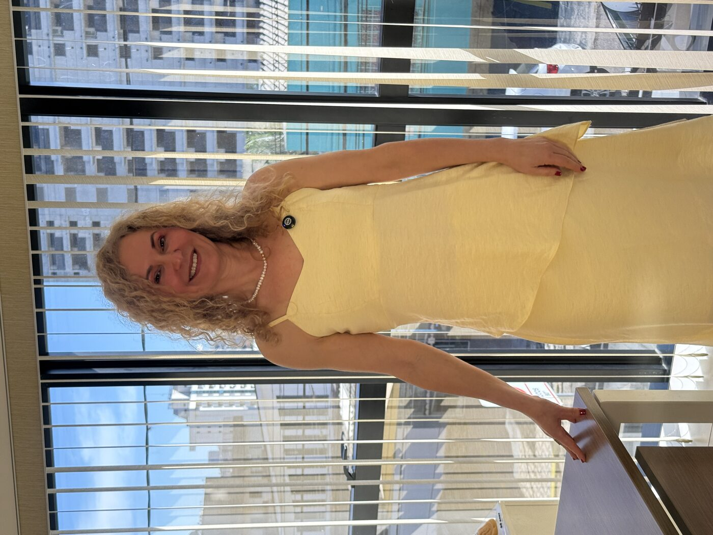
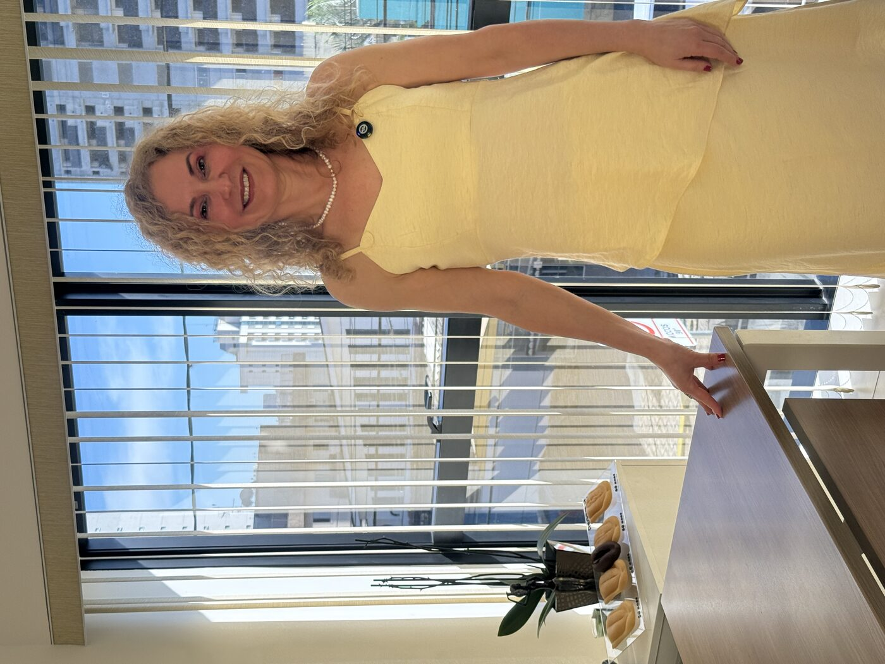

Estética Íntima
Cuidado íntimo com ciência, delicadeza e respeito
Tratamentos estéticos para a região íntima, pensados para o seu conforto físico e emocional — sem julgamentos, sem pressa, com toda a técnica que você merece.
Estética Íntima
Tratamentos estéticos para a região íntima, pensados para o seu conforto físico e emocional — sem julgamentos, sem pressa, com toda a técnica que você merece.
Nossos tratamentos

Rejuvenescimento não cirúrgico que hidrata, firma e melhora o conforto vaginal.
Saiba mais →Procedimento cirúrgico delicado para conforto físico e harmonia estética.
Saiba mais →
Estímulo de colágeno para firmeza e rejuvenescimento, sem cirurgia.
Saiba mais →Uniformização da tonalidade da pele com protocolos médicos seguros.
Saiba mais →Volume e firmeza natural com ácido hialurônico e resultado imediato.
Saiba mais →Por que escolher a Dra. Elaine
Cada mulher chega ao consultório com uma história e uma necessidade diferente. A avaliação é sempre individual, sem protocolos genéricos — e sem julgamentos sobre suas escolhas.
“Meu compromisso é que você se sinta ouvida antes de qualquer indicação de tratamento.”
Dúvidas frequentes
A maioria dos procedimentos não cirúrgicos (laser, radiofrequência, preenchimento) é bem tolerada, com uso de anestesia tópica quando necessário. A ninfoplastia, por ser cirúrgica, é realizada com anestesia local.
Depende dos seus sintomas, objetivos e anatomia. Na consulta inicial, a Dra. Elaine avalia seu caso e indica a opção — ou combinação de opções — mais adequada.
Os tratamentos não cirúrgicos (laser, radiofrequência, preenchimento, clareamento) permitem retorno imediato às atividades. A ninfoplastia, por ser cirúrgica, exige um período curto de repouso.
Agende uma consulta com a Dra. Elaine em Sorocaba e converse abertamente sobre suas necessidades.